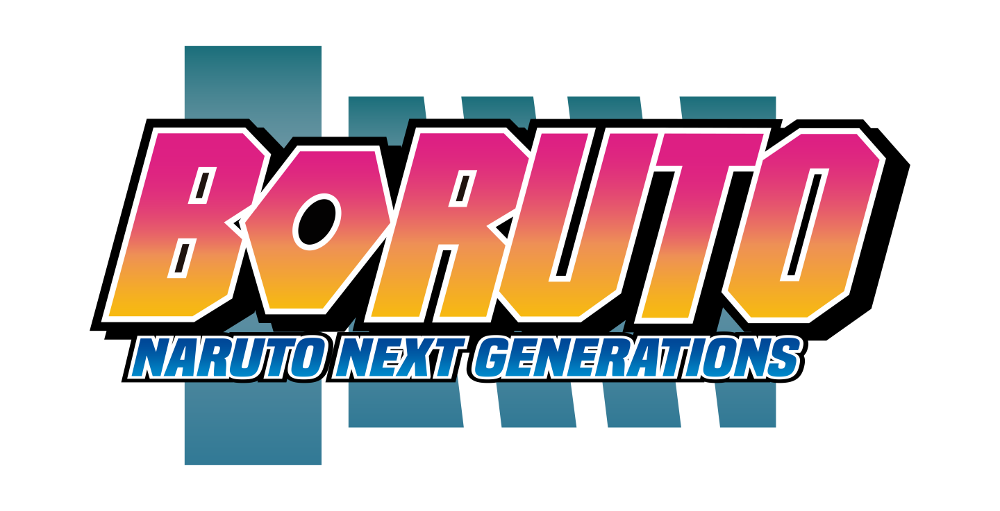
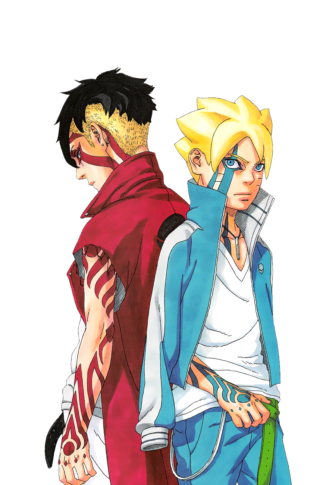

Boruto: Naruto Next Generations é uma série de mangá escrita por Ukyō Kodachi e ilustrada por Mikio Ikemoto, supervisionada pelo criador de Naruto, Masashi Kishimoto. A história é uma continuação da série "Naruto" e acompanha as aventuras do filho de Naruto Uzumaki, Boruto Uzumaki, e de seus amigos enquanto eles enfrentam desafios e novidades em sua própria jornada ninja.